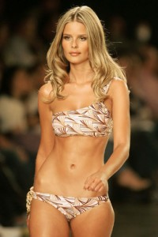
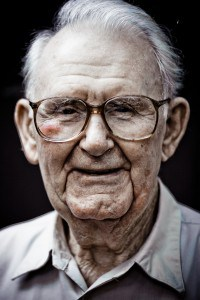
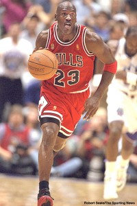

The Cooks
Head Chef- Ashley

Ashley is the most experienced cook at Papa Ray's. Ashley's pizzas are perfection. Ashley provides excellent service and is the cornerstone of the kitchen. Ashley is the head of the kitchen and her pizzas always are ready at the most opportune moment for the customer.
Assistant Head Chef- Andy

Andy is Papa Ray's second most experienced cook with six years of cooking pizza under his belt. Andy's pizzas are always ready at the perfect time. Though kind of grumpy and from unknown regions of Montana Andy is in charge of the kitchen if Ashley is absent.
Pizza Boy- Sage

Sage is Papa Ray's second least experienced cook. Sage's pizzas are delicious, rumored to be even tastier than those of Andy. Sage also is known to provide excellent service.
Pizza Boy- Colton
Colton is Papa Ray's least experienced cook. Though still in training Colton's pizzas show great potential.
About Us - The Menu - The Bar - The Casino - Contact Info